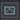

Perform Mode
Perform Mode is an optimized mode for live performance that only renders one specified Window COMP which is one window that contains your video outputs and your (optional) control interface. In Perform Mode the network editing window is not open - you edit your networks in Designer Mode. The function key F1 and the Esc key alternate between the two modes. See Edit -> Window Placement and /perform.
Tip: Pause/unpause the timeline using Shift-Spacebar in Perform Mode and in TouchPlayer.
See also Window COMP, TouchPlayer.
Using Perform Mode[edit]
By default, the Window COMP /perform is set up in Edit - Window Placement to render in Perform Mode.
Enter Perform Mode - click the  button on the left side of the Layout bar or use the F1 function key to enter Perform Mode. You will now only be able to interact with the window specified in the Window COMP.
Exit Perform Mode - press the Escape key while your cursor is over perform window to leave Perform mode and go back to the full TouchDesigner network editing interface. Tip: You may need to press Shift-Esc if the Window COMP has the parameter 'Close on Escape Key' turned off.
Configuration Options[edit]
In the Window Placement Dialog you can view all Window COMPs in your project and configure them. The first column in the list, called Perform Window, lets you set which Window Component will be used by default for Perform Mode. This controls which will open when using the UI Perform Mode button or pressing F1.
The settings (size, location, behavior) for the window which opens are all set in Window COMP's parameters.
Startup Options[edit]
A default TouchDesigner starts in Designer Mode, which is where you edit your network, nodes and parameters.
In the Window Placement Dialog, you can turn on "Start in Perform Mode" to force TouchDesigner to start in Perform Mode for this project. After changing this setting, save the project file and on restart the project will open directly into Perform Mode.
When TouchDesigner starts in Perform mode, the extra memory the Designer interface requires will not be used.
Full-Screen Exclusive Mode (Windows Only)[edit]
Some GPU drivers (Nvidia notably) have the ability to enter a full-screen exclusive mode if the Perform Window is border-less and covers 100% of the desktop. Additionally, the desktop may need to be a 'single' monitor, either by being a single output, or by being joined into a combined output using features such as Nvidia Mosaic or AMD EyeFinity. When in full-screen exclusive mode, the output will be running in a higher performant state. The most important benefit of this is that you can achieve stutter-free playback. Without full-screen exclusive mode the Windows Desktop Compositor may not always show all of the frames TouchDesigner is generating. So even if you are running a perfect 60FPS, you may see stutters/frame drops, if not in full-screen exclusive mode.
You can tell that you are in this mode because if you alt-tab or switch windows, the entire desktop will flash/flicker as it switches back to normal desktop compositing mode.
Tips[edit]
TouchPlayer runs exclusively in Perform Mode. Your project's perform mode settings will determine how it runs in TouchPlayer.
If the project file has Privacy option is set, you cannot exit Perform mode back into Designer Mode.
You can also enter Perform Mode using python: ui.performMode = True. See UI_Class.
See also Designer Mode, Window Placement and Window COMP.